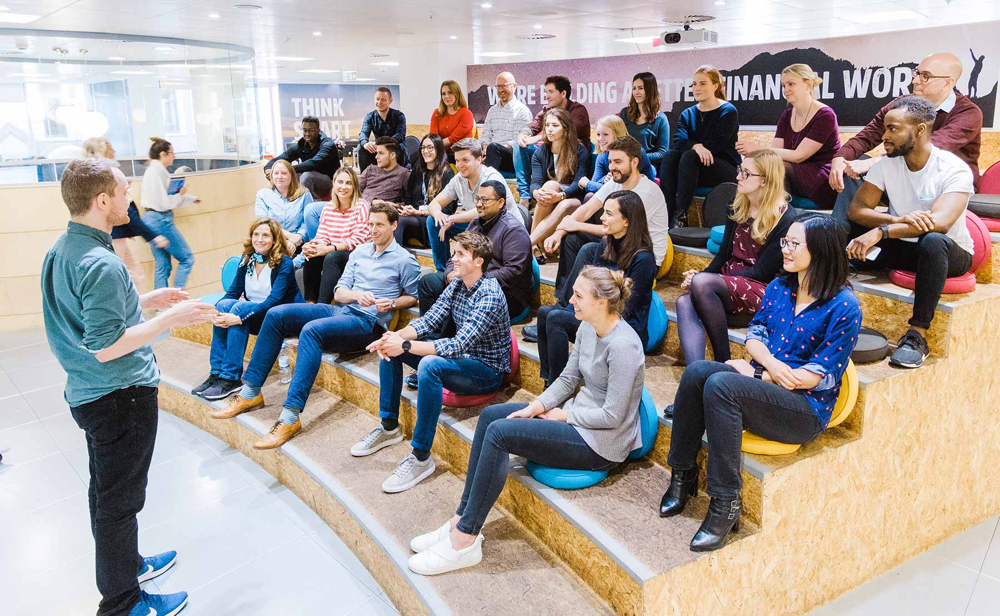
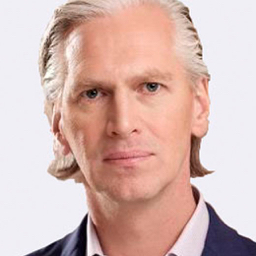

Building the place where small businesses get the funding they need to win
Over the past ten years, we have built a machine learning and technology platform that is revolutionising how small businesses access finance. Business owners can complete a loan application and receive a decision in a matter of minutes, enabling them to get funding quickly at an affordable rate.

Today, as the leading global provider for small business loans we have helped more than 100,000 small businesses access more than £11.5 billion in finance.
We stand for small businesses
Small business owners are forward thinkers. They’re determined. They stand up to make a difference and work hard to make it happen.
When small businesses succeed, they create jobs, support local communities and drive the economy forward - that’s why we care about helping them win. To us, nothing is more important.
We’ve helped 100,000 small businesses across the world
From accountants and jewellers to bakers and filmmakers, we’ve helped thousands of businesses to take their next step forward.
Helen Smith from Glogg borrowed £40,000 to manufacture 200,000 stainless steel cups for Glastonbury Festival.
A leading global small business loans platform
Funding Circle is the largest online small business loans provider and one of the best-capitalised lending platforms in the world. The business is listed on the London Stock Exchange (Ticker: FCH).
Our backers collectively manage over $5 trillion and are the leading firms behind Facebook, Twitter, Skype and Betfair.
Chancellor Philip Hammond praises Funding Circle as a ‘real success story… playing an important role in our economy – helping businesses to grow and create jobs.’City A.M. January 2017
Funding Circle has secured an extra £40m from the Government to lend to small businesses, providing fresh capital at a time when business borrowing is facing a squeeze.The Telegraph, January 2017

Global leadership team
Co-founder, Chief Executive Officer
U.S. Managing Director
Europe Managing Director
Chief Technology Officer
Chief Risk Officer
Chief Capital Officer
Company Secretary, General Counsel and Chief People Officer
Chief Financial Officer
The board
Non-executive Director
Co-founder, Chief Executive Officer
Non-executive Director
Non-executive Director
Chairman of the Board

Non-executive Director
Non-executive Director
Non-executive Director

Company Secretary, General Counsel and Chief People Officer
Chief Financial Officer
Non-executive Director
We’re here to help
Get in touch with our support team for help or more information.

Need help? Give us a call.
How it works
Learn more about how our loans are funded directly by a range of investors.
Small business, big impact
Read how we’re driving the economy forward in our impact report.